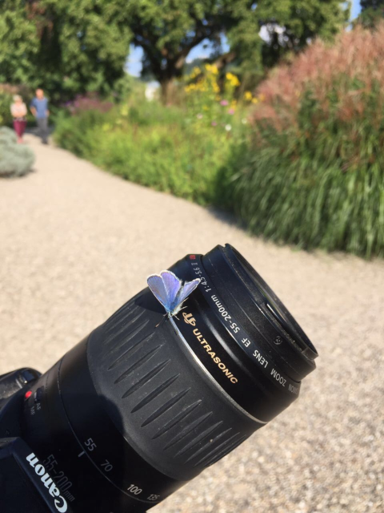
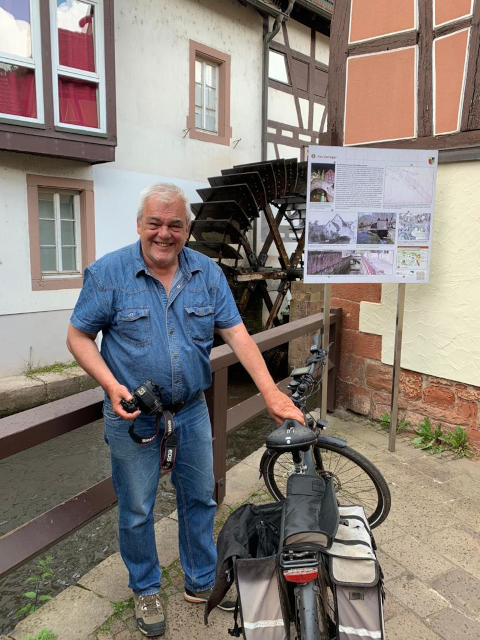
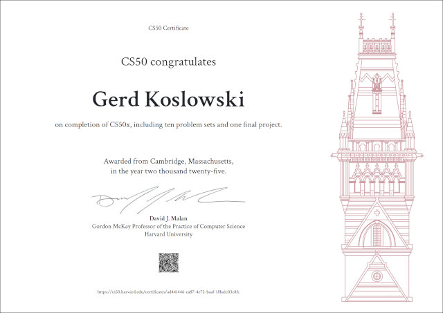

Über meine Hobbies
Ich habe einige Hobbys. Dazu gehören zum Beispiel Fotografieren, Radfahren mit meinem E-Bike und seit einer Weile auch wieder Programmieren. Ich koche mir jeden Tag selbst was, und das macht mir auch richtig Spaß. Ich habe jede Menge Kochbücher und probiere gern neue Rezepte aus. Und wenn das Wetter mitspielt, sitze ich eigentlich immer auf der kleinen Terrasse vor meiner Wohnung – oft mit Nachbarn, bei ’nem Kaffee, und wir quatschen über Gott und die Welt.
Fotografieren
Schon seit langer Zeit ist Fotografieren eines meiner liebsten Hobbys geworden. Zu Analogzeiten war das Ganze für mich einfach zu teuer, um es wirklich als Hobby zu machen. Aber seit den 2000ern, als das Fotografieren günstiger und digital wurde, habe ich das für mich entdeckt.
Am Anfang hatte ich so eine kleine Kamera von Hewlett Packard, aber dann habe ich mir eine gebrauchte Canon 350D gekauft. Die Kamera hat mich sehr lange begleitet. Inzwischen habe ich eine Canon 650D. Die habe ich mir aber nicht geholt, weil ich damit bessere Fotos machen kann, sondern weil man damit auch Videos aufnehmen kann.

Ich habe ziemlich viele gute Fotos – vielleicht bringe ich ja irgendwann mal ’ne kleine Sammlung raus. Seit 2020 hab ich mit der Kamera auch ziemlich viele Videos gemacht.
Wenn ich meine Fotos verwende, mag ich es nicht, die groß zu bearbeiten. Ich ändere höchstens mal die Belichtung, wenn es nötig ist, oder schneide ein Detail aus dem Bild – und das war es dann auch schon an Bearbeitung.
Ausflüge mit meinem E-Bike
Ich fahre jeden Tag mit meinem E-Bike. Das ist mein Hauptverkehrsmittel. Bevor ich das Rad hatte, bin ich oft mit Bahn und Bus unterwegs gewesen, aber seit ich mir 2020 das E-Bike gekauft hab, nehme ich für alles hier in der Gegend eigentlich nur noch das Rad.

In der Jahreszeit mit gutem Wetter mache ich auch gern Radtouren in die Umgebung.
Programmierung von Computern
In letzter Zeit macht mir das Programmieren am Computer wieder richtig Spaß. Obwohl ich früher beruflich Software entwickelt habe und eine Zeit lang in meiner Freizeit keinen Code mehr sehen konnte, habe ich diese Fähigkeit für mich wiederentdeckt – und merke, wie wertvoll sie für mich ist.
So ist das Programmieren wieder zu einem meiner Hobbys geworden. Ich hab sogar erfolgreich einen Kurs in Python-Programmierung bei CS50 gemacht. Damit will ich auf jeden Fall weitermachen. Die Entwicklungen im Bereich der künstlichen Intelligenz interessieren mich sehr.

Die Gallery der absolvierten Kurse kann ich noch erweitern, weil ich im Mai 2025 den Kurs "CS50's Introduction to Computer Science" absolviert habe.

Ich finde es besonders gut, dass man solche Kurse online machen kann. So kann ich ganz in meinem eigenen Rhythmus lernen.
Meine Lieblingsprogrammiersprache ist C, weil sie so klar ist – quasi das Schweizer Taschenmesser unter den Programmiersprachen. Was ich auch mag, ist die Sprache Pascal.